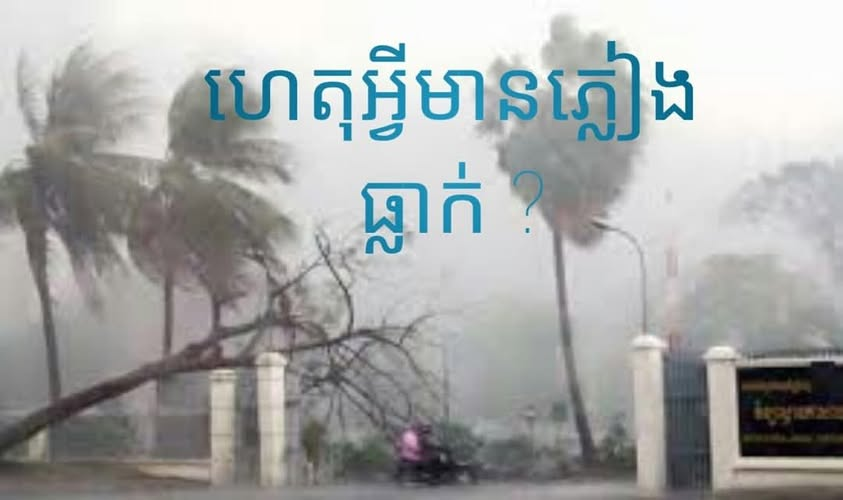

ហេតុអ្វីមានភ្លៀងធ្លាក់?
ទឹកភ្លៀងកើតឡើងដោយសាររំហួតនៃចំហាយទឹក ចំហាទឹកកើតជាពពកហើយពពកធ្វើបំលាស់ប្តូរទៅជាតំនក់ទឹករួច
តំនក់ទឹកទាំងនោះមានទំងន់ធ្ងន់បន្តិចម្តងៗរហូតធ្លាក់មកលើផែនដីជាភ្លៀង ។ តាមធម្មតាតំនក់ទឹកភ្លៀងធំមានវិជ្ឈមាត្រ (អង្កត់ផ្ចិត)រហូតដល់៣មីលីម៉ែត្រ ។ ពេលខ្លះភ្លៀងមាន
តំនក់តូចល្អិតៗ ហើយធ្លាក់ហុយតាមខ្យល់មានសណ្ឋានដូចផ្សែង...